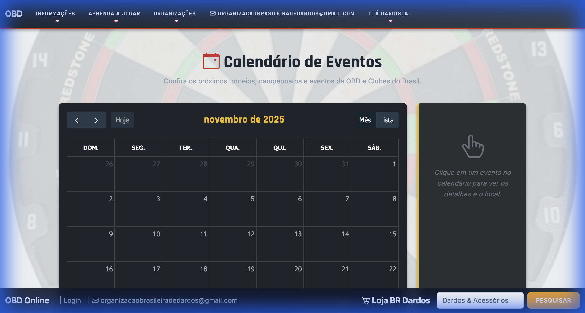

Calendar Design Options
Este documento detalha as opções de design e implementações visuais aplicadas ao Calendário de Eventos do sistema
OBD.
1. Ícone de Evento (Dartboard)
Design Escolhido
Foi selecionado um ícone de alvo de dardo com fundo preto para melhor contraste e integração com o tema
escuro do cabeçalho do evento.
- Arquivo:
dartboard_event_icon_v2.png
- Tamanho: 40px x 40px (Aumentado para melhor visibilidade)
- Posicionamento: Centralizado acima do título do evento.
2. Estilização do Bloco de Evento
Estrutura Visual
O bloco do evento foi customizado para criar um efeito de "ícone flutuante" com um título destacado.
- Fundo do Evento: Transparente (
background-color: transparent). Isso remove
a barra sólida padrão do FullCalendar.
- Borda: Removida (
border: none).
- Título: Fundo vermelho sólido (
#b91d47) com texto branco, criando uma
barra de leitura clara abaixo do ícone.
CSS Aplicado
.fc-event {
background-color: transparent !important;
border: none !important;
box-shadow: none !important;
}
.fc-event-title {
background-color: #b91d47; /* Vermelho OBD */
color: white;
padding: 2px 5px;
border-radius: 3px;
text-align: center;
font-weight: bold;
margin-top: 2px;
}
3. Tratamento de Eventos Multi-dias
Lógica de Exibição
Para garantir que o ícone apareça em todos os dias de um evento longo, a lógica de
renderização foi alterada:
- Anteriormente: O FullCalendar renderizava uma única barra contínua atravessando os
dias.
- Atualmente: O backend (Python) divide o evento em múltiplos "eventos de dia único".
- Resultado: Cada dia possui seu próprio bloco, com seu próprio ícone e título,
reforçando a presença do evento na grade.
4. Correção de Datas
A lógica de comparação de datas foi ajustada para ignorar horários (00:00 vs 10:00) e considerar apenas o
dia, garantindo que o último dia do evento seja sempre incluído na visualização.
5. Resultado Final
Abaixo, o resultado final da implementação no calendário:

Visualização mensal com ícones personalizados e eventos multi-dias